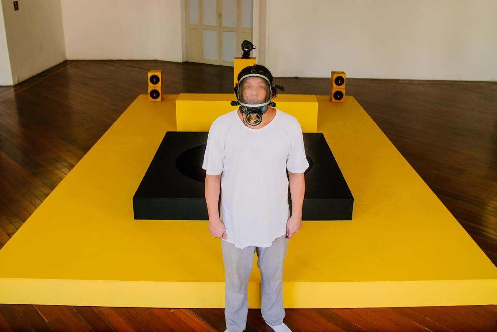

Cidade Labirinto
Registro sonoro em preparação.



Construir uma cidade imaginária a partir da escuta e da memória coletiva das ruas. No Centro Municipal de Arte Hélio Oiticica, o visitante abre passagens por paredes móveis: um labirinto vivo, que muda conforme quem anda por ele.
Quantos mapas afetivos cabem numa cidade? Quem vive ali, quais são suas histórias, quem construiu seus territórios? Escutar a cidade faz enxergar o outro.
- Materiais
- Instalação sonora com paredes móveis; exposição digital e podcast
- Local
- Centro Municipal de Arte Hélio Oiticica, Rio de Janeiro (maio de 2021); cidadelabirinto.art (agosto de 2021)
- Exposição
- Cidade Labirinto (2021)